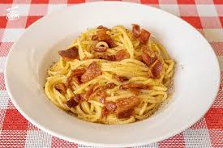
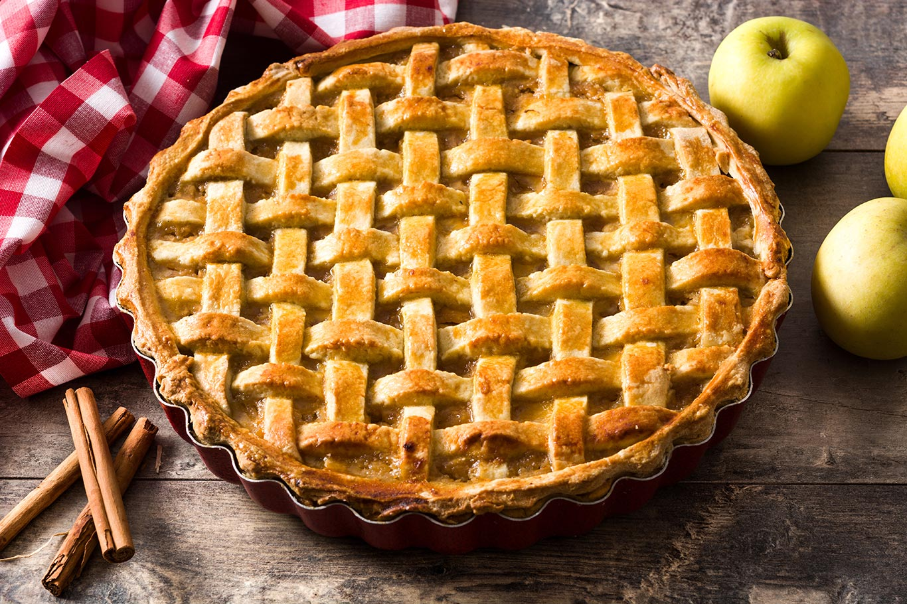
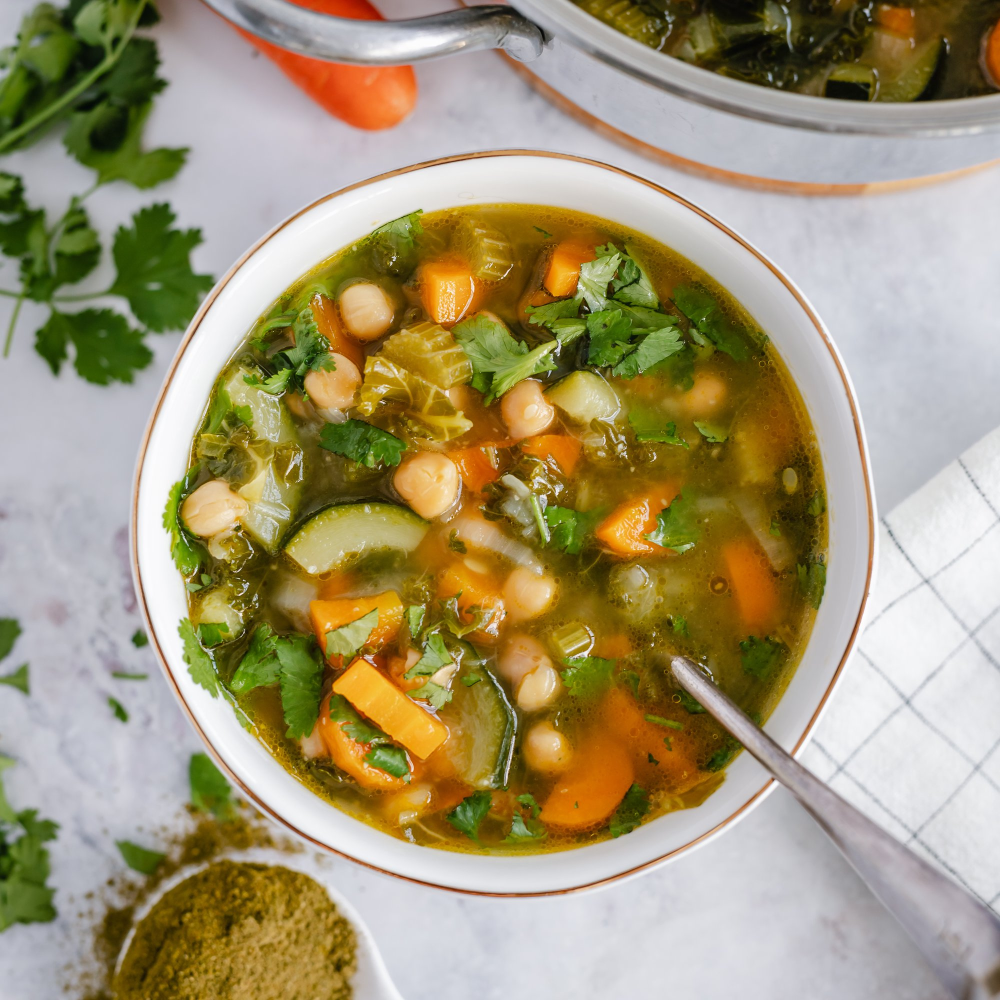

Blog de Cocina Casera
Recetas Fáciles y Deliciosas
Galería de Recetas
Aquí se pueden ver algunas fotos de recetas ya preparadas. Una muestra de lo que se puede lograr en casa.

Pasta Carbonara cremosa y casera

Tarta de manzana dorada al horno

Sopa de verduras saludable y reconfortante